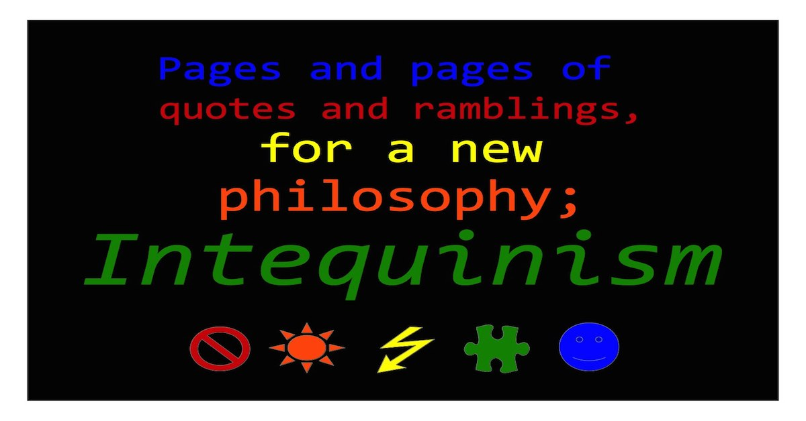

∞ ⋈ ∞ ∞ ⋈ ∞ ∞ ⋈ ∞ ∞ ⋈ ∞ ∞ ⋈ ∞ ∞ ⋈ ∞
Unedited Ramblings and Quotations from more than 30 philosophers' work.
∞ ⋈ ∞ ∞ ⋈ ∞ ∞ ⋈ ∞
Metamask wallet, e.g. connects to the following frame, for paying Africahead, for reading on the site, if you like.
For payments of more than $7 USD, Moyom (MYM) utility tokens will be sent in return.

Metamask Wallet
∞ ⋈ ∞ ∞ ⋈ ∞ ∞ ⋈ ∞
Aristotle
Augustine
Francis Bacon
Blackburn
Oxford Dictionary of Philosophy.
Capra
Roy Clouser
The Myth of Religious Neutrality.
Foucault
Richard Kearney - Philosophy of Religion
Anatheism: Returning to God after God.
Anatheism: Returning to God after God. Chapter 6.
Kenny
A New History of Western Philosophy in Four Parts.
Marx / Rousseau / Hitler - Philosophy of Economics
Mautner
Penguin Dictionary of Philosophy.
Nietzsche
Plato
Popper
The Two Fundamental Problems of The Theory of Knowledge.
Roberts
Bertrand Russell
History of Western Philosophy.
Sartre
Adam Smith
Tarnas
The Passion of The Western Mind.